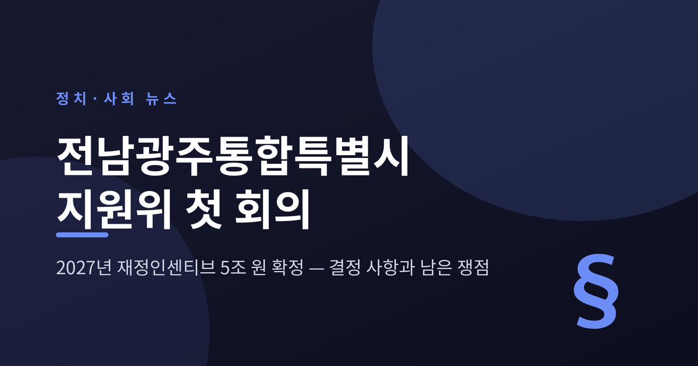
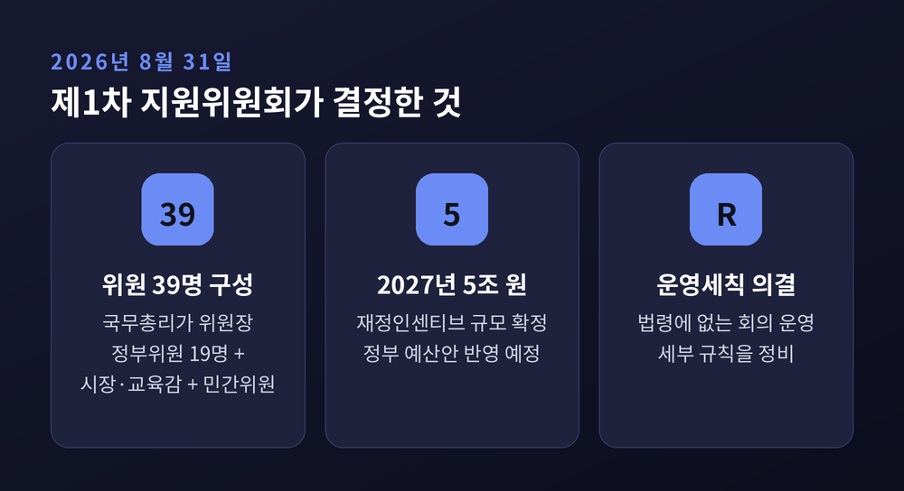
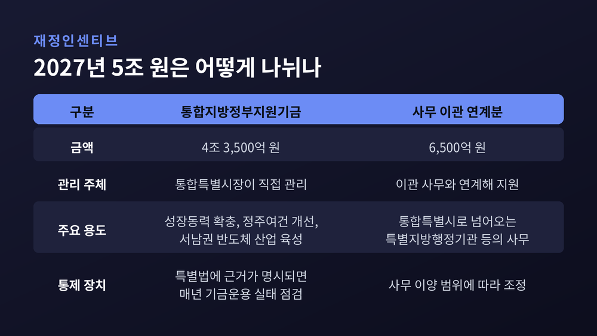
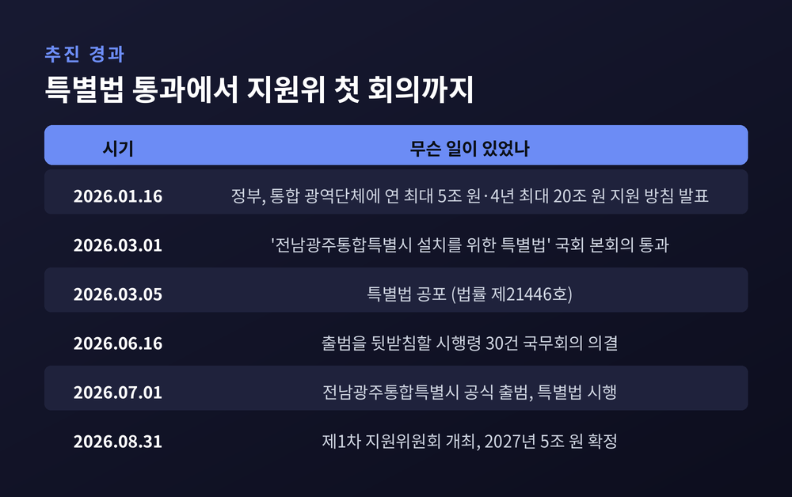
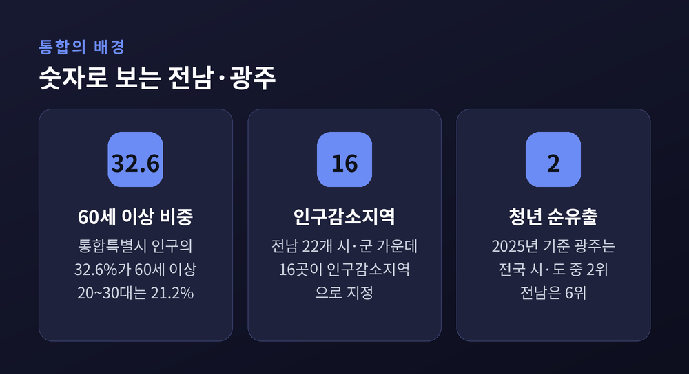
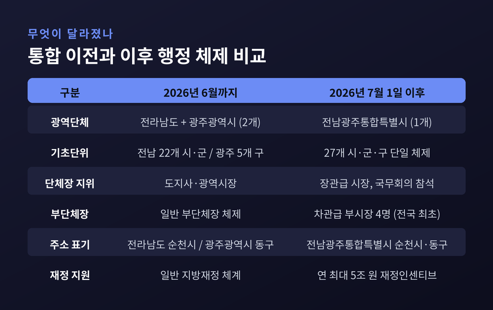
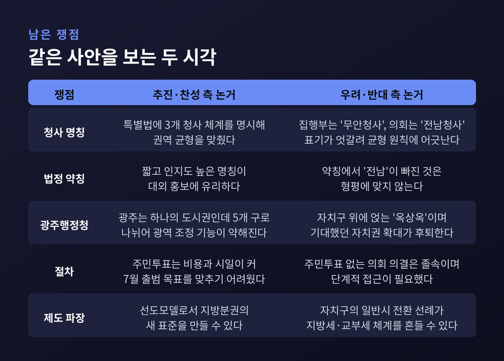

이번 글에서는 전남광주통합특별시 지원위원회의 첫 회의를 정리해 보겠습니다. 2026년 7월 1일 출범한 전국 첫 광역 행정통합 사례가 두 달 만에 정부 지원 기구를 가동했습니다. 무엇이 결정됐고 어떤 숙제가 남았는지 차례로 짚어보겠습니다.
세 줄 요약
지원위원회 개최는 예고된 일정이었습니다. 언론이 정리한 정부 부처 주간 일정표(8월 31일~9월 4일)에 기획예산처 장관과 농림축산식품부 장관의 참석 일정이 나란히 올라 있었습니다. 통합특별시 문제가 특정 부처의 현안이 아니라 범정부 과제로 다뤄지고 있다는 신호로 읽힙니다.
위원회는 국무총리를 위원장으로 하는 심의 기구입니다. 정부위원 19명에 통합특별시장과 통합특별시교육감, 도시개발·지방분권·교육자치 분야 민간 전문가를 더해 모두 39명으로 구성됐습니다. 첫 회의에는 한성숙 국무총리와 정부위원 16명, 민형배 전남광주통합특별시장, 김대중 통합특별시교육감, 민간위원 15명이 참석했습니다.
이날 심의 안건은 두 가지였습니다. 하나는 위원회 운영세칙, 다른 하나는 2027년 재정인센티브 지원방안입니다. 법령에 담기지 않은 회의 운영 세부 규칙을 먼저 정리하고, 곧바로 돈 문제를 매듭지은 셈입니다.

확정된 2027년 재정인센티브는 총 5조 원입니다. 구조는 둘로 나뉩니다.
첫째, 4조 3,500억 원 규모의 '통합지방정부지원기금'입니다. 통합특별시장이 직접 관리하며, 성장동력 확충과 정주여건 개선, 서남권 반도체 산업 육성 등에 쓸 수 있습니다. 지방정부가 재량으로 굴릴 수 있는 재원이라는 점이 핵심입니다.
둘째, 나머지 6,500억 원입니다. 통합특별시로 이관되는 특별지방행정기관 등의 사무와 연계해 지원됩니다. 권한을 넘기면서 그에 딸린 재원도 함께 넘긴다는 취지입니다.
다만 이 기금이 무제한의 자유를 뜻하지는 않습니다. 기금의 설치·운용 근거가 특별법에 명시되면 매년 기금운용 실태를 점검받게 됩니다. 재량과 통제가 함께 설계된 구조입니다.
한성숙 국무총리는 정부가 지난 1월 약속한 연간 최대 5조 원의 재정지원 방안을 확정해 2027년 정부 예산안에 반영하기로 했다고 밝혔습니다. 관계부처에 추가 지원 방안을 발굴해 달라는 주문도 함께 나왔습니다. 민형배 시장은 통합이 정부 국정과제인 '5극 3특'의 선도모델인 만큼 성과로 답하겠다는 뜻을 밝혔습니다.

기초자치단체끼리 합친 사례는 이전에도 있었습니다. 그러나 광역자치단체 간 행정통합은 이번이 처음입니다. 국회입법조사처도 2026년 3월 보고서에서 같은 점을 짚으며, 통합의 안착 방안에 논의를 집중할 필요가 있다고 밝혔습니다.
정부가 내건 원칙은 '먼저 추진하는 곳에 파격 지원'이었습니다. 2026년 1월 16일 정부는 행정통합을 선택한 광역단체에 연간 최대 5조 원, 4년간 최대 20조 원을 지원하고 서울특별시에 준하는 지위를 부여하겠다고 발표했습니다. 부단체장을 4명으로 늘리고 직급을 차관급으로 올리는 방안, 공공기관 우선 이전도 함께 제시됐습니다.
이번 지원위원회는 그 약속이 실제 예산으로 옮겨지는지 확인하는 첫 관문이었습니다. 약속의 첫 해분이 숫자로 확정됐다는 점에서 의미가 있다는 평가가 나옵니다. 반대로, 남은 3년치가 정권과 국회 사정에 따라 흔들릴 수 있다는 우려도 함께 제기됩니다.
1986년 광주가 직할시로 승격되며 갈라선 두 지역이 40년 만에 다시 합쳐졌습니다. 경과는 이렇습니다.
특별법 제12조는 국무총리 소속으로 지원위원회를 두도록 정하고 있습니다. 심의 대상은 특별시의 성과목표와 평가, 기본계획 수립·시행, 행정·재정자주권 제고를 위한 입법·행정 조치, 균형발전계획, 협약 체결과 평가결과 활용 등입니다. 권한 이양과 규제 완화, 재정 지원까지 통합 운영 전반이 이 테이블에 올라옵니다.

통합의 명분은 수도권 일극체제 완화와 권역별 성장 거점 육성이었습니다. 그 뒤에는 인구 지표가 있습니다.
통합특별시 인구를 연령대로 나누면 60세 이상이 32.6%로 가장 많습니다. 40~50대가 31.0%, 20~30대가 21.2%, 20세 미만이 15.2%입니다. 전남은 2024년 기준 청년인구 비율이 전국 시·도 중 가장 낮고 고령인구 비율은 가장 높습니다. 22개 시·군 가운데 16곳이 인구감소지역으로 지정돼 있습니다.
청년 유출도 뚜렷합니다. 2025년 기준 광주의 청년인구 순유출률은 전국 시·도 중 경북에 이어 두 번째로 높고, 전남도 여섯 번째로 높은 수준입니다. 산업단지 경쟁력 약화와 두 광역단체의 중복투자 문제도 통합 논거로 함께 거론돼 왔습니다.
예전엔 두 지역이 기업 유치와 사업 예산을 놓고 나란히 경쟁했습니다. 지금은 하나의 창구로 협상하는 구조로 바뀌었습니다. 그 변화가 실제 성과로 이어질지는 앞으로 몇 년의 기록이 답할 문제입니다.

전라남도와 광주광역시는 폐지됐습니다. 전남 22개 시·군과 광주 5개 구, 모두 27개 시·군·구가 단일 행정체제로 묶였습니다. 인구는 약 320만 명, 지역내총생산은 약 159조 원 규모입니다.
특별시장은 장관급으로, 서울특별시장에 준하는 지위를 갖고 국무회의에 참석할 수 있습니다. 전국 최초로 차관급 부시장 4명을 두어 행정·안전·경제·문화 분야를 나눠 맡도록 했습니다. 출범 당시 조직은 4실 7본부 24국 체제였고, 행정 수요에 따라 조정될 여지가 있습니다.
법정 약칭은 '광주특별시'입니다. 주소는 기존 시·군·구 명칭을 그대로 쓰되 상위 단위만 바뀌었습니다. '광주광역시 동구'는 '전남광주통합특별시 동구'로, '전라남도 순천시'는 '전남광주통합특별시 순천시'로 표기됩니다.
권한 이양도 조금씩 진행 중입니다. 2026년 6월 국무회의에서 시행령 30건이 한꺼번에 의결됐습니다. 국가 행정사무에 관한 행정기관장 권한을 통합특별시장에게 위임할 근거가 마련됐고, 지방자치법과 소방청 소관 시행령에 '통합특별시'라는 새 유형이 반영됐습니다. 특별시 경찰청장 임용 때 시장의 동의를 얻도록 한 조항도 포함됐습니다. 도시개발 분야에서는 공공주택지구 지정·변경·해제 권한이, 교육 분야에서는 학년도와 학기, 수업일수를 달리 운영할 수 있는 자율운영 기준이 함께 정비됐습니다.

첫째, 청사 명칭입니다. 특별법은 집행부 청사를 '전남동부청사·무안청사·광주청사'로 규정하고 있습니다. 그런데 같은 무안 부지에서 집행부 건물은 '무안청사', 의회 건물은 '전남청사'로 불리는 구조가 만들어졌습니다. 한쪽만 지명으로 대체한 것은 통합의 균형 원칙에 맞지 않는다는 지적이 나옵니다. 전남권에서는 '무안청사'를 '전남청사' 또는 '전남무안청사'로 바로잡는 특별법 개정안이 필요하다는 요구가 제기되고 있습니다.
둘째, 약칭입니다. 법정 약칭에서 '전남'이 빠진 데 대해 형평 문제가 제기됐습니다. 통합특별시 전남도 공무원노조 익명 게시판 등에서는 '전남광주시', '전남광주특별시', '광주전남시'처럼 양쪽을 모두 담는 명칭을 쓰자는 주장이 나왔습니다.
셋째, 광주 내부의 반발입니다. 광주 시민 일부는 자치구의 일반시 전환을 두고 사실상 '광주 해체'라고 비판합니다. 시의회와 교육 기능이 무안으로 옮겨가고 광주는 예산과 권한이 제한된 구청들로 쪼개진다는 문제 제기입니다. 이에 민형배 시장은 광역행정 공백을 메울 '광주행정청'(가칭) 신설을 검토했습니다. 찬성 측은 광주가 하나의 도시권인데 5개 구로 나뉘어 조정 기능이 약해질 수 있으니 지원 조직이 필요하다고 봅니다. 반대하는 자치구청장과 구의원들은 자치구 위에 또 다른 행정 주체를 얹는 '옥상옥'이라며, 통합으로 기대한 자치권 확대가 오히려 후퇴할 수 있다고 우려합니다.
넷째, 절차적 정당성입니다. 광주시와 전남도는 주민투표 대신 시·도의회 의결로 통합을 추진했습니다. 행정 측은 주민투표에 수억 원의 비용과 상당한 시일이 들어 2026년 7월 출범 목표를 맞추기 어려웠다고 설명합니다. 반면 광주시민단체협의회는 '졸속 추진'이라며 반대 입장을 냈고, 향후 의사결정은 주민투표로 정할 것을 요구했습니다. 일방적 추진에 반대한다는 공개청원도 접수됐습니다.
다섯째, 제도 전반에 미칠 파장입니다. 국회 행정안전위원회에서는 1949년 이후 광역시 자치구가 일반 시로 바뀐 사례가 없다는 점을 들어, 이번 선례가 전국의 특별시·광역시 자치구로 번지면 지방세와 교부세 체계의 근간이 특별법 하나로 흔들릴 수 있다는 우려가 제기됐습니다.

전남광주 사례는 다른 지역 논의의 참고서가 됐습니다. 다만 방향은 서로 다릅니다.
충남·대전 통합은 대전 쪽의 위기의식과 세종·충북 변수, 의견 수렴 부족 등이 겹치며 반발이 커졌다는 평가를 받습니다. 대구·경북 통합은 경북 북부지역의 불만을 해소하지 못해 사실상 무산됐다는 진단이 나옵니다. 대구경실련은 2026년 8월 성명에서 전남광주의 통합 후폭풍을 거론하며 대구·경북 통합은 주민투표로 결정하자고 제안했습니다.
전남광주 통합이 지방선거를 넉 달 앞두고 논의돼 큰 충돌 없이 빠르게 진행됐다는 관찰도 있습니다. 속도가 강점이었는지 약점이었는지는, 아직 결론을 내리기 이릅니다.
성과 쪽 신호도 나오고 있습니다. 통합 이후 처음으로 국가 공모 국책사업에 선정됐습니다. 과학기술정보통신부의 양자 클러스터 지정 공모에서 양자통신 분야 대상지로 뽑혔고, 2027년부터 4년간 국비 1,000억 원을 포함해 1,400억 원이 투입됩니다. 광주 첨단과학산업단지가 기술개발과 제조·실증의 중심 거점을 맡고, 나주는 전력망과 에너지 보안, 해남은 인공지능과 데이터 보안, 고흥은 우주·위성통신 분야를 맡습니다. 전국 지정지는 서울, 전남광주, 부울경 세 곳입니다.
앞으로 지켜볼 지점은 세 가지입니다.
하나, 2027년 예산 확정 과정입니다. 지원위원회가 확정한 5조 원은 정부 예산안에 반영되는 단계를 지나 국회 심의를 거쳐야 합니다.
둘, 특별법 개정 논의입니다. 청사 명칭과 기금 근거 조항을 손보자는 요구가 이미 나와 있습니다. 개정 폭에 따라 통합의 무게중심이 달라질 수 있습니다.
셋, 자치구와 시·군의 자리매김입니다. 광역이 커진 만큼 기초의 권한과 재원을 어떻게 정리할지가 통합의 체감도를 결정할 것으로 보입니다.
아직 완결된 이야기가 아닙니다. 두 달은 제도의 성패를 판단하기에 너무 짧은 시간입니다.
정리하면 이렇습니다. 전남광주통합특별시는 법과 예산이라는 두 축을 모두 확보한 상태로 첫 관문을 통과했습니다. 그러나 청사와 이름, 자치권과 절차를 둘러싼 갈등은 여전히 남아 있습니다.
"제도는 출범했고, 합의는 아직 진행 중입니다."
40년 만의 재결합이 성공한 실험으로 기록될지 물으신다면, 답은 앞으로 4년의 기록에 있다고 말씀드리겠습니다.